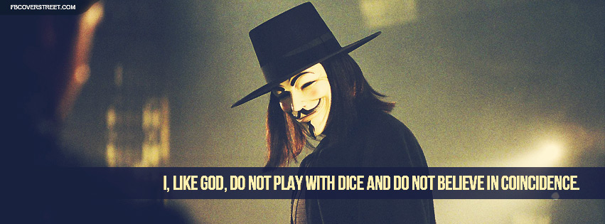
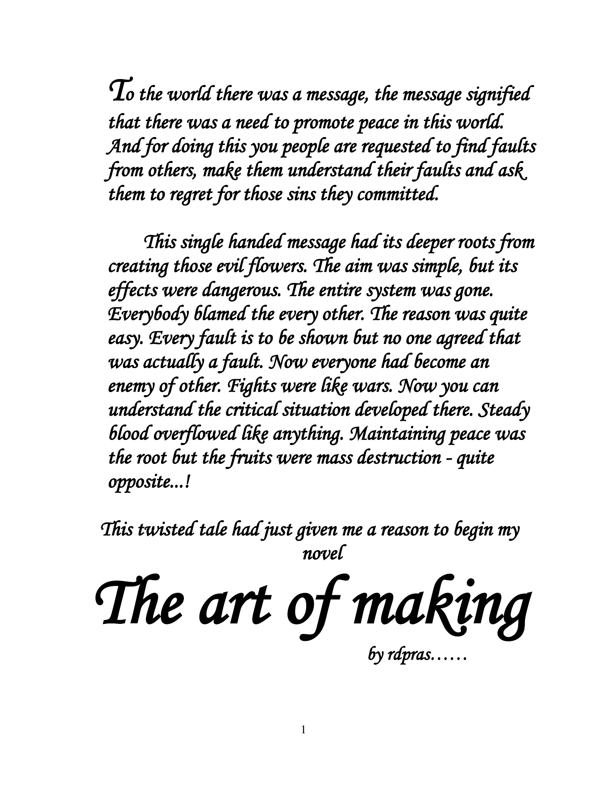

This is IT
Lyrics for a college rap album, combining campus identity, internal rhyme, cadence, and performance energy.
Writer & lyricist
As Rckstr RD’Z, I move between narrative, essays, technical reflection, rap, rhyme, and performance—always looking for the line that makes the idea memorable.


A peace message turns into blame and conflict. The nomadic Jaimans enter the Konkomodo desert, where hunger, hospitality, survival, and hidden motives unfold through an adventure of twists.
Lyrics for a college rap album, combining campus identity, internal rhyme, cadence, and performance energy.
Recent writing on AI-assisted development and Web3 experiments, with more notes to come.
Personal writing, observations, and ideas from the archive that grew alongside the technical work.
A feeling, contradiction, question, or image strong enough to keep pulling the piece forward.
Use word choice, contrast, repetition, rhyme, and pacing to carry both meaning and momentum.
Revise until the writing sounds natural when spoken, not only correct when scanned.

Rap showed me that vocabulary, rhythm, storytelling, and technical control could live in the same four minutes.
I’m interested in work where a distinctive voice can make a meaningful idea travel further.